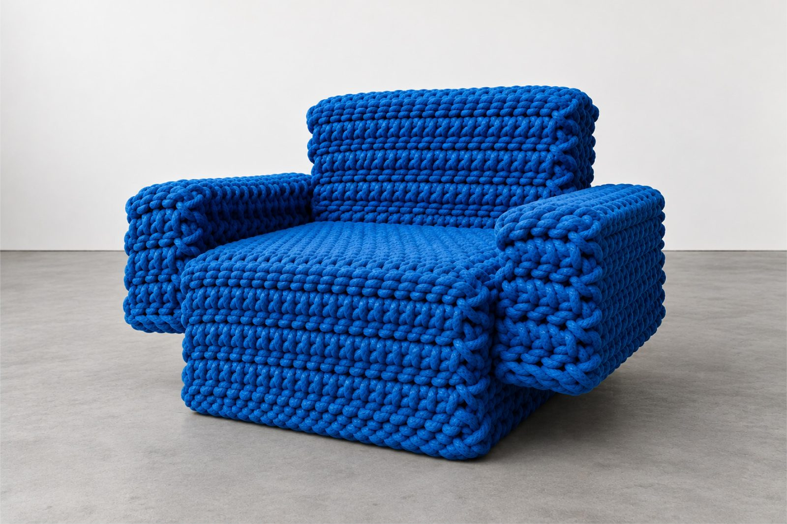

DESIGN FREAKS
Diseñadores y arquitectos que
transforman los espacios,
mejoran nuestras vidas y hacen
de lo cotidiano algo
extraordinario

luciamorales.es
Diseñadores y arquitectos que
transforman los espacios,
mejoran nuestras vidas y hacen
de lo cotidiano algo
extraordinario
